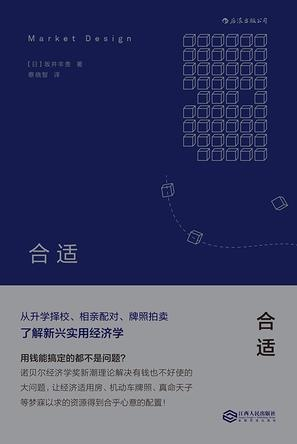
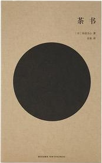

本书主要讲了新时代科技企业的特点以及传统家长制、规划和控制等管理方式的弊端，提出了一种新的管理范式「合弄制」（这个翻译感觉怪怪的）。「合弄制」主要思想是分权自治，抛弃传统的层级管理结构采用圈子的形式作为组织结构，个人和圈子都具备自治权，同时伴随着责任，遵循章程办事，从人治到法治，既解放管理者又把权力交还给工作过程，发挥每个人的主动性和价值。
有人说这是「敏捷开发」的企业版，确实有异曲同工之处。与敏捷开发类似，认为一切都是在变化之中的，因而更倾向于根据实际反馈动态调整工作，而非以初始规划为重，然后提出一套实际操作手法，例如，章程制定、会议形式、人员组织形式等。
倘若完全照搬未免落入死板被动的境地，具体方法都套用的话也就落入了「重量级」的俗套，许多做法听起来是这么回事，但实际工作环境和团队情况千差万别，指某种使用「银弹」般的管理方法而后就可以安枕无忧的想法不现实。至于书本中提倡整个企业采取颠覆式的变动来推行，未免过于乐观，就像作者说的不愿放权的领导，不愿合作的中层，突然停止综合症等阻碍，还只是冰山一角，不具体展开。确实有非常好的理念，这种做事氛围也是自己认同和向往的，但也有鼓吹的成分，有些内容信服度不高。书中的一个重要观点是根据实际反馈动态调整，那么扩展一下可以同样用于「合弄制」本身，通过吸收令人反思的部分来改善管理工作，获得更加适合于自己的方式。
作者: [日] 坂井丰贵

开始看到这本书其实挺惊讶的，有种见微知著的感觉，看上去如此平常简单的事情，竟然可以通过理论体系和算法得到更合理的解决，而不是凭感觉行事。那么日常中，我们一直采用无知落后的方式来做决策而不自知的有多少？
深感市场设计的魅力，以及为经济学家思维的层次感与创造力所折服。制度和游戏规则设计绝不是件简单的事，有时甚至需要经过理论和公式的严密论证。良好的规则应该获得优化结果的同时还能防止策略性操作，使得表达真实意图和诚信的行为得到鼓励，消除碰运气和投机性而获利的可能。
以下记录本书的关键点，本书分三个部分，
继续阅读 →作者: [日] 冈仓天心

感想与摘录
原以为是介绍喝茶知识的书，然而并不是。一直对日本诸多侘寂之美的设计颇为赞赏，简朴亲切而又实用摒弃任何多余的干扰，然而对于这种审美的根基一无所知，看完后又刷新了对日本的一些认知，对简约朴素的审美和文化之渊源有了全新的了解，甚是惊喜。
译者的后记是本书不可忽视的篇章，更通透地解释了中日文化渊源和差异，视角非常有启发。中国艺术的背后主要是权力、审美的统治，而日本则是普通民众的力量，民艺运动通过改善民众的生活品质进而促进社会进步。日本茶道的建立是对这种审美统治的挑战，属于自己空间关系的审美而非复制中国的审美，我们总是提传统文化的保护却很少钻研传统文化的发展，传统不应该成为包袱，应该随时蜕去积攒千年的壳，关照事物纯粹的本质，没有创造无所谓传统，传统是创造的积淀。极为认同译者所言中国没有茶道，中国有饮茶的方法，近年来大陆的饮茶之风日盛，只是附庸风雅、软弱无力，是虚假和令人生厌的，没有文化的优雅是妖，再多的人声鼎沸也只能是繁华躁动且妖气弥漫。